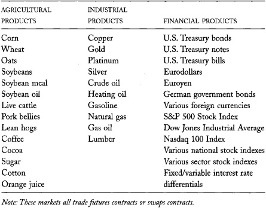
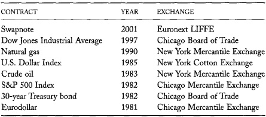
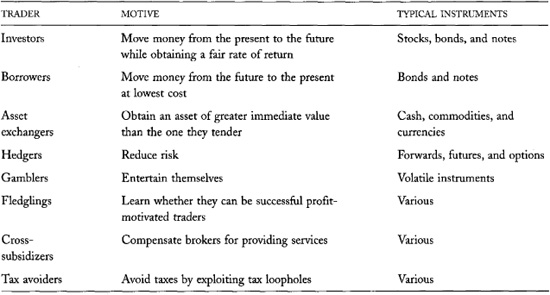
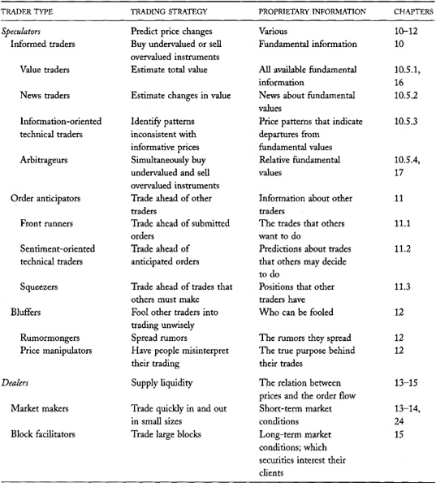
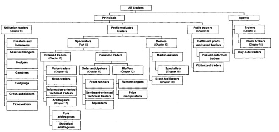

Chapter 8: Why People Trade
People trade to invest, to borrow, to exchange assets, to hedge risks, to distribute risks, to gamble, to speculate, or to deal. We consider each of these objectives in this chapter and explain how markets help traders achieve them.
You must understand why people trade in order to use markets effectively. Markets provide many valuable opportunities. To take advantage of them, you must first recognize them.
By considering why people trade, you will better understand why you trade and whether you should trade. Many traders do not fully recognize the reasons why they trade. Consequently, they pursue inappropriate trading strategies or they trade when trading is counterproductive to their true interests. The optimal trading strategy for a given trading problem depends on the problem. You cannot trade well if you do not know why you want to trade.
Knowing why people trade may also help you determine whether other traders understand why they are trading. This skill is very important because you can usually distinguish good money managers from poor ones by whether they understand well why they trade. It is also important because traders who do not fully understand why they trade often trade foolishly. If you can identify such traders, you may be able to profit from their foolishness.
If you engage in any trading strategy that depends on the volume of trade, you must understand why people trade in order to interpret volumes properly. Many factors cause people to trade. If your trading strategy depends on one of these factors, you will want to examine volumes carefully. However, you must be careful to recognize when other factors may cause people to trade. Otherwise, you may misinterpret volumes and trade when you should not.
Markets are successful only when people trade in them. If you want to design a new market, or if your business depends on trading in a successful market, you must understand why---and how---people trade.
Trading is a zero-sum game in an important accounting sense. In a zero-sum game, the total gains of the winners are exactly equal to the total losses of the losers. Trading is a zero-sum game because the combined gains and losses of buyers and sellers always sum to zero. If a buyer profits from a trade, the seller loses the opportunity to profit by the same amount. Likewise, if a buyer loses from a trade, the seller avoids an identical loss.
Successful traders must understand the implications of the zero-sum game. To trade profitably, traders must trade with people who will lose. Profit-motivated traders therefore must understand why losers trade in order to know when they should trade.
Finally, you must understand why people trade in order to form well-reasoned opinions about market structures. Different structures favor different trader types. If you intend to influence a decision about market structure, you should first consider how the decision affects various traders. The benefits that traders obtain from markets depend on why they trade. Regulators and other interested parties must therefore understand these reasons.
This chapter identifies the main reasons why people trade. We will refer to them throughout the rest of the book. Pay close attention to the distinctions between investing, speculating, and gambling. When traders confuse these important concepts, they often trade poorly. When regulators confuse them, they often adopt policies that hurt the markets. Also consider why liquid markets benefit most traders. When you understand why people trade, you will appreciate why all market participants care about liquidity.
Multiple Identities
Many traders simultaneously invest, speculate, and gamble. They invest when they need to move money from the present to the future. They speculate when they try to use information about future security prospects to obtain a better return on their investments. They gamble when they focus more attention on favorable outcomes than on losing outcomes.
Their multiplicity of interests often compromises their judgment. Investors frequently speculate without thinking about whether they would be good speculators, and speculators often gamble without considering whether their emotional needs have influenced their judgment.
For expository clarity, we will associate a stylized trader with each reason for trading, and we will assume that the stylized trader trades only for that reason. In practice, traders often trade for many reasons. The complexity of their motives explains why many traders get confused and fail to fully recognize why they trade. By considering stylized traders, we simplify our discussions and ultimately make it easier for you to identify the different reasons why people trade.
Our stylized traders are profit-motivated traders, utilitarian traders, or futile traders. Profit-motivated traders trade only because they rationally expect to profit from their trades. Speculators and dealers are profit-motivated traders. Utilitarian traders trade because they expect to obtain some benefit from trading besides trading profits. Investors, borrowers, asset exchangers, hedgers, and gamblers are utilitarian traders. Futile traders believe that they are profit-motivated traders. Although they expect to trade profitably, their expectations are not rational. They have no advantages that would allow them to be profitable traders. Utilitarian traders and futile traders lose on average to profit-motivated traders because trading is a zero-sum game.
Traders are either informed or uninformed. Informed traders can form reliable opinions about whether instruments are fundamentally undervalued or overvalued. The fundamental value of an instrument is the value that all traders would agree upon if they knew all available information about the instrument and if they could properly analyze this information. An instrument is undervalued when its market price is below its fundamental value. It is overvalued when its price is above fundamental value. Since nobody actually knows fundamental values, traders must estimate them. Informed traders typically form their opinions from insightful analyses of publicly available information or from simple analyses of information that is not widely known. Informed traders speculate on their information by buying undervalued instruments and selling overvalued instruments. Informed traders are therefore profit-motivated traders. Uninformed traders do not know whether instruments are fundamentally undervalued or overvalued. Either they cannot form reliable opinions about values or they choose not to. Uninformed traders include utilitarian traders, futile traders, and some types of profit-motivated traders.
Our discussion starts with, and primarily focuses on, utilitarian traders. At the end of the chapter, we will introduce the profit-motivated traders and the futile traders. Detailed discussions of how they behave appear in subsequent chapters devoted exclusively to their various styles.
8.1 UTILITARIAN TRADERS
Utilitarian traders trade to obtain some benefit besides trading profits. Investors and borrowers trade to move money forward or backward through time. Asset exchangers trade to exchange one asset for another asset of greater value to them. Hedgers trade to exchange risks. Gamblers trade for entertainment. Fledglings trade to learn how to trade. Cross-subsidizers trade to transfer wealth to other people. Tax avoiders trade to minimize their taxes by exploiting tax loopholes. We will consider each of these traders in turn.
8.1.1 Investors and Borrowers
People often need to move money from one point in time to another. Workers need to move their current earnings from the present to the future in order to finance their retirements. Students need to move their future earnings to the present to pay tuition. Young couples need to move their future earnings to the present to buy houses.
These problems are all examples of intertemporal cash flow timing problems. People face intertemporal cash flow timing problems when their incomes and expenses do not always coincide. When their incomes are more than their expenses, they invest money to move money into the future or they repay money that they borrowed in the past. When their incomes are less than their expenses, they borrow money from the future or they liquidate investments that they made in the past. People invest, borrow, liquidate, and repay to move money forward or backward through time.
Corporations and governments also face intertemporal cash flow problems. The most common problem that corporations face is inadequate current cash flow to pay for investments that will generate future revenues. To solve this problem, they borrow money from the future by selling bonds or stock shares. Governments most commonly borrow against their future tax revenues to finance current spending. They may use the money to fund projects that will produce benefits in the future, to fund current services, or to enrich poor people, disabled people, retirees, immigrants, and, in many cases, farmers and, manufacturers.
Although people, corporations, and governments invest and borrow to move money through time, in aggregate no money actually moves through time. Instead, for every dollar invested, someone must borrow a dollar. The assets that investors use to move money from the present to the future therefore are the same assets that borrowers use to move money from the future to the present. Traders buy assets when they want to move money to the future or when they repay money that they previously moved back in time from the current present to the past. They sell assets when they want to move money from the future to the present, or when they redeem money that they previously moved forward in time.
Investors use various financial and real assets to move money forward through time. Financial assets include stocks, bonds, mutual funds, insurance policies, certificates of deposit, demand deposits, and currencies. Real assets include real estate, machinery, commodities, precious metals, and going business concerns. Investors who cannot, or who would rather not, manage their own funds give their money to banks, mutual funds, retirement funds, insurance companies, and other financial intermediaries to invest for them.
A Ballpark Estimate
How much trading volume in the U.S. equity markets is due to trading by pure investors? Much less than you might imagine! Here is a rough estimate.
Saving for retirement is by far the most important investment problem that people face. We can get a rough estimate of the annual dollar volume of private investment transactions by estimating how much retirees spend of their own money. In 2000, total personal consumption in the United States was 7 trillion dollars of which 1 trillion dollars was for health services. Assume that 20 percent of the non-health consumption was by retirees, and that retirees consumed 80 percent of the health services, so that retirees consumed a total of 2 trillion dollars. Retirees received about 0.7 trillion dollars in benefits from social security, Medicare, and Medicaid. They therefore had to finance 1.3 trillion dollars of consumption.
In 2000, the total dollar volume of U.S. equities trading was more than 43 trillion dollars (table 3-5). If retirees financed their consumption only by selling stocks, they would account for only 3 percent of all trading volume. Stocks, However, represent only about 20 percent of the capital assets of the country (table 3-4). If retirees sold all capital assets equally, their equity trading would account for only 0.6 percent of equity volume.
Workers who invest for their retirements also trade. If they expected no real return on their investments, if the population were not growing, if the retirement age were constant, and if the payments from Social Security and Medicare were expected to remain constant, workers would have to invest 1.3 trillion dollars per year to finance their retirements. Although these assumptions are obviously wrong (a positive expected real return lowers the estimate; a growing population raises it; a growing retirement age lowers it; and decreasing payments from government programs increases it), they give us a ballpark estimate for how much workers must be saving for retirement. If workers place 20 percent of their savings in the stock market, and if they buy and hold their securities, they will be responsible for another 0.6 percent of equity volume.
The total of 1.2 percent from retirees and workers overestimates the actual total investment-motivated trading volume because workers and retirees mostly invest and disinvest through private pension funds and mutual funds. These funds do not have to trade when the deposits made by (or on behalf of) workers offset the redemptions made by (or on behalf of) retirees. This happens much of the time so that the 1.2 percent investment-motivated trading volume estimate is much too high.
It is also too high because workers will occasionally trade directly with retirees. In which case, our estimate will double-count trading volume.
The assumptions in this analysis are quite crude. Yet, even if we increased our estimate ten-fold, we would still only account for less than one-eighth of all equity trading volume! People clearly trade equities for many reasons besides investment.
Borrowers create and sell various debt instruments to move money from the future to the present. These instruments include bonds, commercial paper, mortgage notes, home equity loans, bank loans, and credit card obligations.
Borrowers who create and sell debt instruments to public investors are issuers. Only creditworthy borrowers can successfully issue debt securities. The investors who buy their issues must be confident that the issuers ultimately will redeem them. Large corporations and governments are typically the only borrowers who can issue debt directly into the marketplace. Most individuals and small businesses cannot issue public debt because most investors cannot easily determine whether they are creditworthy.
Economic Proof That No One Will Ever Invent a Time Machine
To the list of logical contradictions associated with time travel, consider the following economic argument. If a time machine could freely move people and their money through time, the after-tax real rate of interest would always be zero. If it were ever positive, profit-motivated time travelers would carry money from the future to the present to invest. They would then go back to the future to liquidate their investment at a profit. The effect of their trading would be to depress real interest rates toward zero. If they carried enough money or if they repeated the cycle often enough, they would eventually force the real interest rate to zero. Since real rates of interest generally are positive, we can confidently conclude that either people will never invent time machines, or they will be too expensive for arbitrageurs to operate profitably.
Source: Marc Reinganum, "Is Time Travel Impossible? A Financial Proof," Journal of Portfolio Management 13, 1 (1986): 10-12.
Borrowers who cannot issue debt instruments directly to the public borrow money from banks, finance companies, and other financial institutions that will loan them money. These financial intermediaries then often issue debt instruments to finance the loans that they make.
Banks and finance companies can lend money to individuals and small businesses because they are organized to cheaply determine whether their customers are creditworthy. Compared to public investors, they can more efficiently collect on small loans, especially if they are in default.
Corporations that need to finance projects may issue equity instead of debt securities. They may be unable to issue debt because they are not sufficiently creditworthy. They may choose not to issue debt because they do not want to assume the risks associated with highly leveraged balance sheets.
Firms that undertake very risky projects often cannot raise money through debt offerings because investors fear the company will be unable to pay off the debt. If that happens, the company will go bankrupt and the debt holders will own the remaining assets of the company. When this outcome is likely, investors prefer to start out as equity holders so that they can exercise some control over the management of the firm from the start. In addition, when substantial losses are likely, investors will not provide financing unless substantial returns are likely. Since only equity can provide such return distributions, very risky firms must raise money by issuing equity instead of debt.
Investors and borrowers carefully choose the assets that they trade to solve their intertemporal cash flow timing problems. Their decisions depend on the expected returns, risks, and transaction costs of the various assets. Investors naturally favor assets that have high expected returns, low risk, and low transaction costs. Borrowers favor assets that they expect will cost them the least to create, to service, and to repay. As a rule, the riskiest assets and those which are most expensive to trade have the highest expected returns. Traders must carefully consider these factors when deciding how to move money through time.
Textbooks about investments provide detailed discussions of how investors and borrowers weigh these various factors and of how their decisions affect asset prices and expected returns. For present purposes, merely note that investors and borrowers best solve their intertemporal cash flow timing problems when their transaction costs are low. Transaction costs are what people pay to move money from one point in time to another. Since transaction costs are low in liquid markets, investors and borrowers like liquid markets. When transaction costs are high, trading is an expensive method of moving money through time.
Investors expect to get a fair rate of return when using the markets to move money into the future. Indeed, many investors will defer their consumption only because of the investment returns that they expect to receive. Since investors are uninformed traders, the rate of return that they expect to receive does not depend on any private information that they may have. The fair rate of return is therefore an unconditional expected return.
The unconditional expected return to an investment has two components. The real risk-free interest rate is the return that investors expect to receive for deferring their consumption without risk of a real loss. (Investors suffer real losses if they cannot buy as much in the future as they could have bought had they not invested.) The real rate of interest depends on how much money investors and borrowers want to move through time. It is usually positive because people would want to move more money from the future to the present than vice versa if there were no cost of doing so. Since money cannot actually move through time, the real risk-free interest rate must be positive to discourage some borrowers and encourage some investors.
Wealth-Moving Technologies in Less-Developed Economies
In economies where property rights are poorly defined, and where people cannot effectively enforce contracts, financial markets do not function well. In such economies, strongmen often steal assets and many people refuse to settle their contracts when they have lost money.
To move wealth through time in such economies, people must resort to other methods. Most lending is within families because family bonds often ensure performance. Strongmen dominate public lending markets because they can use extralegal means to enforce their contracts. Investors typically invest in assets that they can hide or that only they can control. These assets include gold and silver, which they can easily hide, and human capital and housing, which thieves and corrupt officials cannot easily take. Finally, families tend to be large in economies with poorly developed financial markets because parents invest in children to provide for their retirement years.
The risk premium is the additional expected return that investors demand to compensate them for the risk that their investment may not actually return the real risk-free interest rate. Risky assets have risk premiums because they are poor vehicles for moving money through time. Investors do not like them because they risk losing their wealth when using them. To get them to bear these risks, they must be compensated for holding these assets.
Although all traders hope to receive extraordinary returns from their investments, investors do not expect them. In this respect, they differ from speculators. Speculators trade because they expect to receive a higher return than the unconditional return that investors require to defer their consumption and to bear risks. They form these expectations based on private information they have about future returns. The expected returns of speculators are therefore conditional expected returns. Speculators expect higher returns from their positions than do investors.
8.1.2 Asset Exchangers
Asset exchangers use markets to exchange assets that they own for other assets that are of greater immediate use to them. Spot commodity markets and foreign exchange markets are the largest organized markets in which asset exchangers trade. In most asset exchanges, a buyer pays money or similar financial assets to a seller who delivers a commodity or a currency. In bartered trades, both traders exchange goods or services. In such trades, the distinction between buyer and seller is not always clear.
Examples of Asset Exchanges
• U.S.-based Volkswagen importers use the currency markets to exchange U.S. dollars for the euros they need to buy Volkswagens in Germany.
• Photographic film manufacturers use the spot silver markets to purchase the silver they need to make their films.
• Feedlot operators use the spot soybean market to purchase the soybeans they need to feed their livestock.
In a sense, all voluntary trades are asset exchanges. In a voluntary trade, traders acquire assets that are of greater value to them than the ones they give up. They would not trade otherwise. Investing and borrowing are special cases of asset exchanges. Investors exchange current money for assets that allow them to move money forward through time. Borrowers create debt instruments that they exchange for money they can use to buy things now. Although we could classify all trades as asset exchanges, we use the term only for trades that traders arrange because they have a current use for the item they acquire. Practitioners often call the markets in which such trades take place cash markets or spot markets.
The Carryout Cash Market
One of the more interesting cash markets is the market for cash. ATM operators must regularly put currency into their machines so that their customers can withdraw cash on demand. These machines require properly formatted bills. If the bills are dirty, wrinkled, or sticky, they can jam the machines or cause them to dispense cash inaccurately.
A small industry has developed to package ATM-fit currency for use in ATM machines. The list price for a 20,000-dollar brick of 10 bundles of 100 20-dollar bills is 20,003.50 dollars. The 3.50 dollar premium over face value is the price that small ATM operators pay to have bank cash vaults recondition and package currency that they can confidently use in their ATM machines. (Large ATM operators negotiate better prices.) ATM-fit currency is thus a commodity in the same sense that silver is a commodity.
Spot commodity and currency markets are some of the world's biggest markets. The foreign exchange markets are especially large. For example, according to the Bank for International Settlements, the average daily global volume in the spot currency markets was 1.2 trillion dollars in April 2001. This volume is about 10 times greater than global equities volume.
Asset exchangers like liquid cash markets. Such markets allow them to convert their assets from one form to another at low cost. Markets also must trade the assets that traders need. A liquid cash market for soybeans in Chicago is of little use to a Texas dairy that needs to buy soybeans for delivery in Texas. The dairy would benefit more from a liquid soybean market in Texas.
8.1.3 Hedgers and Hedging
Many economic activities expose people and businesses to serious financial risks. Consider four examples:
• Wheat farmers risk losing money if the price of wheat falls after they plant their fields but before they harvest them. The price they receive for their wheat might be too low to allow them to recover the costs of planting and cultivating it.
• Wholesale bakers risk losing money if the price of flour rises after they enter fixed-price contracts to supply bread but before they have purchased the flour necessary to make the bread. The cost of baking the bread might be greater than the fixed price they will receive.
• Traders who speculate in individual stocks risk losing money if the stocks they buy drop because the market as a whole drops. Speculators in individual stocks may be able to predict which stocks will beat the market, but they usually cannot predict what the whole market will do. If the market falls, they could lose money even if their stocks outperform the market.
• Banks that lend money at fixed long-term rates and borrow money at variable short-term rates risk losing money if interest rates rise. Their revenues would be fixed, but their borrowing costs would rise.
The risks in these examples are all very substantial. They can easily cause their holders to go bankrupt. Fortunately, markets and trading strategies have evolved that allow traders to avoid these risks.
Hedgers use the markets to reduce their exposure to substantial financial risks. They hedge their risks by selling or buying instruments whose values are correlated or inversely correlated with the risks that they face. Their positions in these instruments are their hedges, and the instruments are their hedging vehicles. When properly executed, the risks in their hedges offset their financial risks. Their hedged positions---the combinations of their positions in the original risk and in the hedging vehicle---are less risky than either position taken separately.
Traders use many instruments to hedge their financial risks. The remainder of this section examines how various hedging strategies can help solve the risk management problems in the above examples. These examples illustrate the use of forward contracts, futures contracts, option contracts, and swaps as hedging vehicles.
Covering the Naked
Traders sometimes call unhedged positions naked positions because they expose them to risks. They call hedged positions covered positions because they cover the risks to which naked positions are exposed.
8.1.3.1 Some Commodity Hedging Examples: Wheat and Flour
The risk that prices will change for the worse is price risk. The price risk that traders face depends on whether they lose from an increase or a decrease in price.
Wheat farmers and bread bakers face complementary price risks. If the price of wheat falls, the farmers will lose money but the bakers, who have to buy flour made from wheat, will save money. Likewise, if the price of wheat rises, the bakers will lose money but the farmers will profit.
Wheat farmers and bread bakers are natural hedgers because they face complementary risks. They can eliminate their exposure to their respective risks by combining their operations or by entering contracts that allow them to assume each other's risks.
Hedging by Combining Businesses
Since the two risks are complementary, farmers and bakers can arrange to share their risks and thereby eliminate them. For example, by going into partnership, a farmer and a baker can eliminate their collective exposure to fluctuations in wheat prices. If the price of wheat rises, their farming profits will offset their baking losses. If the price falls, their farming losses will offset their baking profits. This partnership would be an example of a vertically integrated firm. Many firms integrate vertically to avoid exposures to price fluctuations in the markets for their intermediate goods.
Although a partnership would allow a farmer and a baker to manage their price risks, it may not be the best solution to their risk management problems. Most farmers do not know much about the wholesale baking business, and most wholesale bakers do not know much about farming. Their ignorance of each other's operations would complicate their management of the partnership.
Hedging with Forward Contracts
Farmers and bakers can also manage their price risks by exchanging forward contracts. A forward contract is an agreement to trade something in the future at a price that is set now. Hedgers frequently use forward contracts to hedge price risks.
In our example, a farmer would create and sell a forward wheat contract to a baker. The contract would specify a price at which the baker would buy the farmer's future harvest. The farmer then would be long wheat in the ground and short the forward contract. The baker would be short flour and long the forward contract. Since the value of the forward contract depends on the price of wheat, the two traders would have hedged positions. If wheat prices rise, the forward contract will rise in value. The farmer's greater farming profits will offset the losses on his short forward contract position, and the baker's profits on her long forward contract position will offset her baking losses. If wheat prices fall, the forward price will drop in value. The farmer's forward contract profits then will offset his farming losses, and the baker's greater baking profits will offset her short forward position losses. If the farmer and the baker can construct perfectly hedged positions, their total profits will no longer depend on future changes in the price of grain.
Although some farmers and bakers may manage their risks by exchanging forward contracts, three significant problems make this method infeasible for most farmers and bakers:
• To execute a forward contract, a farmer and a baker either must know each other or a broker must introduce them. Without a well-organized market, they may have trouble finding each other.
• Each of the two contractors must trust that the other will honor his or her commitment. If the price of wheat drops before the contract delivery date, the baker will prefer to ignore the contract and buy cheaper wheat. The farmer must trust that the baker will buy his wheat at the agreed-upon price. If the price of wheat rises, the farmer will prefer to ignore the contract and sell his wheat at a higher price. The baker must trust that the farmer will deliver his wheat anyway. The baker and the farmer must know each other well to confidently trust each other.
• The farmer and baker may find it difficult to arrange delivery terms that are convenient to both. The delivery terms of a contract specify where, when, how much, how, and exactly what the seller will deliver to the buyer. The farmer and baker may be geographically distant from each other, or the baker may be interested in a different grade of grain than the farmer can deliver. In addition, if the baker does not mill his own flour, he will prefer to receive flour rather than grain.
These problems ensure that forward contracts are attractive hedging vehicles only for traders who trade with each other in the normal course of business. Since such relationships are usually one-to-one relationships, forward markets generally are not liquid.
Hedging with Futures Contracts
To address these problems, markets have developed a special type of forward contract called a futures contract. A futures contract is a standardized forward contract for which a clearinghouse guarantees the performance of the buyer and seller by interposing itself between the buyer and seller of every trade. It acts as the seller for every buyer and as the buyer for every seller. The clearinghouse guarantee allows any buyer to trade with any seller without worrying about credit risk. Contract standardization ensures that all traders trade the same instrument. These features make futures markets very liquid.
All futures contracts traded in a given commodity market for the same delivery month are identical. In particular, they all have the same delivery terms. Few traders, however, make or take delivery because most traders prefer different delivery terms. To avoid delivery, buyers sell their contracts and sellers repurchase their contracts before delivery. Since the contracts have the same delivery terms, and since the clearinghouse is on the opposite side of all positions, traders can close their positions by trading with any other trader. To be released from their contractual obligations, they do not have to trade with the person with whom they originally traded.
Pork Bellies on the Lawn
Comedians occasionally tell stories about speculators who buy futures contracts and forget to close their positions before the delivery date. In these stories, a truck pulls up to the procrastinator's suburban house and dumps a 40,000-pound load of fresh pork bellies on his lawn. (A pork belly is an uncured side of pork.) The comedians then describe the resulting chaos.
In practice, brokers attempt to contact their clients before delivery to determine their intentions. If a broker cannot reach a client and if the broker knows that the client does not intend to accept delivery, the broker usually will sell the contract to avoid delivery. In the event that the contract actually delivers, the delivery would be to a warehouse rather than to a front lawn.
Suppose that the wheat farmer in our example is in North Dakota. To hedge the price risk associated with his crop, he sells September Chicago Board of Trade wheat futures contracts short. These contracts call for the delivery of 5,000 bushels of wheat on the last business day of September. The contract specifies the types and grades of wheat that may be delivered. It also requires that the delivery occur in Chicago, Toledo, or St. Louis at specified grain elevators. The farmer does not intend to ship his wheat to any of these cities for delivery. Instead, he will sell it to a local grain elevator operator after he gathers his harvest. At the same time, he will repurchase his futures contract. Although the futures contract calls for delivery in cities distant from North Dakota, it is still a good hedging vehicle for the farmer because wheat prices in North Dakota are closely correlated with Chicago wheat futures contract prices.
Wheat prices in Chicago and North Dakota are closely related because shipping wheat between these two locations does not cost much. Under normal conditions, the difference in the two wheat prices can be no greater than the average cost of shipping a bushel of grain. If prices differ by more than the shipping cost, an arbitrageur would buy wheat where it is cheaper (typically in North Dakota), sell it where it is more expensive, and ship it to make the delivery.
The difference between the Chicago wheat futures price and a local cash wheat price is the local basis. Since cash prices vary slightly by location, the basis also varies by location. The local basis typically reflects the costs of shipping wheat from where it grows to where it is used. The basis obtained its name because grain traders throughout the Midwest typically express their local cash prices in terms of a premium to or discount from the Chicago futures price. The Chicago futures price is the base price, and the premium to or discount from the Chicago price is the basis.
The wholesale baker can hedge her price risk by buying wheat futures contracts when she enters a fixed-price contract to supply bread in the future. When she actually needs the flour, she will buy it from a local miller and simultaneously sell her futures contracts. The futures contract is a good hedging vehicle for her because Chicago wheat futures prices are closely correlated with the prices she pays for flour.
Traders hedge with futures when they want to reduce price risk. The futures hedge effectively locks in a future price so that hedgers will not lose from an adverse price change or profit from a favorable price change. A futures hedge therefore eliminates both downside risk and upside potential. Since the gains and losses on a futures contract are almost exactly proportional to changes in the underlying cash price, a futures hedge is a linear hedge.
8.1.3.2 Two Stock Hedging Examples
Given careful research, Jack expects that Apple's newest computer will be more successful than is widely thought. He therefore buys 550,000 dollars of Apple common stock (AAPL). The price of Apple depends on the success of the new computer and on other marketwide factors. Even if the new computer is successful, Jack may lose money if Apple falls in a market-wide drop.
Hedging with Index Futures Contracts
To hedge against this risk, Jack sells December S&P 500 Index futures contracts at the Chicago Mercantile Exchange. The S&P 500 Index is an index of stock market values prepared by Standard and Poor's Corporation. The index is proportional to the total market value of 500 large stocks that Standard & Poor's believes broadly represent all large U.S. stocks. The final settlement value of the December S&P 500 Index futures contract is 250 times a special opening quotation of the S&P 500 Index computed from the opening values of the constituent stocks on the third Friday of December. The value of the contract therefore fluctuates with the value of the S&P 500 Index.
Jack believes that the average relation between percentage price changes in Apple and in the S&P 500 Index is approximately one to one. (The beta of the stock is 1.0.) Jack therefore wants to sell about 550,000 (550 × 1.0) nominal dollars of S&P 500 Index contracts to hedge his Apple position. Since the current value of the S&P Index is 1,084, Jack sells two contracts, which gives him about 542,000 (2 × 250 × 1,084) dollars of index risk exposure.
If Jack is right about Apple, the stock will outperform the market, whether the market moves up or down. If the market drops and pulls Apple down with it, Jack will lose on his Apple position, but he will profit on his short index futures position. If Apple indeed outperforms the market, Apple will drop less than the market, and Jack will make more money on his short position than he loses in Apple. If the market rises, Jack will lose on his short index futures position. If Apple indeed outperforms the market, Jack will make more money in Apple than he loses in the index futures contract. Regardless of what the market does, Jack will profit if Apple outperforms the market.
By hedging his bet with index futures contracts, Jack can limit his risk exposure only to whether Apple will beat the market or not. Since his research advantage is specific to Apple, the hedged position exposes him only to those risks where he has a competitive advantage. Since he cannot predict the market any better than anyone else can, he would like to avoid exposure to market risk. Speculators are generally most successful when they expose themselves only to the risks they understand best.
Hedging with Stock Option Contracts
Jack also could hedge his position in Apple by buying Apple put options. Put options would allow him to sell his position at a fixed strike price at any time before the option expiration date. If the price of Apple drops below the strike price, Jack would exercise his put options and thereby limit his losses. The purchase price of the options---the options premium---is the cost of this insurance. Jack would buy Apple put options rather than sell them because put option prices vary inversely with common stock prices.
An options hedge is a nonlinear hedge because the relation between option prices and their underlying stock prices is nonlinear. Put contract prices decrease as stock prices rise, but their rates of decrease decline as prices rise. (The relation would be linear if the rate of decrease were constant.) This nonlinear relation allows Jack to hedge his downside risk fully while preserving the potential for upside appreciation. When the stock price is well below the strike price, the put option is quite valuable. Changes in the put price are approximately the same size (but of opposite sign) as changes in the stock price, so that increases in the put option price almost completely offset further drops in the stock price. However, when the stock price is high relative to the strike price, the put option has little value. Changes in the put price, then, are much smaller than changes in the stock price, so that further losses from the put options hardly offset further increases in stock prices.
Jack may use put options to hedge his downside risk even if he never intends to exercise them. Since put option prices rise as the price of Apple falls, Jack can achieve his hedging goals simply by selling the options when he no longer wants to hedge.
According to the options put-call parity theorem, the combination of a long position in Apple and a long position in Apple puts is essentially the same as a long position in Apple call options. Both strategies would allow Jack to profit if the price of Apple rises and would limit his losses if Apple drops for any reason. If Jack wishes to hedge a preexisting position in Apple stock, he would probably buy puts. The strategy would be especially attractive if Jack has a large unrealized gain in Apple stock on which he does not want to pay taxes. If he wishes to establish a new position in Apple with upside potential and limited downside potential, he would probably buy call options.
The difference between hedging downside loss via futures and via options lies in the trade-offs made to eliminate the downside risk. In a futures hedge, the hedger gives up upside potential, but does not have to pay a premium for the hedge. In an options hedge, the hedger gives up a premium, but gets to keep the upside potential.
Jack might prefer the stock options hedge to the index futures hedge if he is uncertain about the quality of his information. The options hedge will limit his losses if he is wrong about Apple's value.
Jack might also prefer to use the stock options hedge if he believes that a decline in the market is more likely than an increase. The motivation for such a decision, however, is purely speculative. Jack also could act on this opinion by buying index futures contracts or index call option contracts.
8.1.3.3 An Interest Rate Hedging Example
Wilshire Savings and Loan borrows money from its depositors at variable short-term rates and lends money to homeowners at long fixed rates. If interest rates rise, Wilshire will have to pay more for its deposits, but it will receive no more from its portfolio of loans. A large increase in interest rates could cause the bank to go bankrupt.
Financial managers call this problem the duration mismatch problem. The duration of the bank's assets is greater than the duration of its liabilities. To manage this risk, Wilshire Savings and Loan needs to hedge its uncertain cash flows.
Hedging with Swaps
Wilshire can hedge its interest rate risk by entering an interest rate swap. An interest rate swap is an agreement between two parties to swap a fixed-rate cash flow for a variable-rate cash flow. The swap contract specifies both cash flows. A typical swap contract involves a five-year swap of semiannual payments. The variable-rate cash flow depends on some short-term interest rate index, like the London InterBank Offered Rate (LIBOR). The fixedrate cash flow depends on the rate that the parties negotiate when they arrange their swap.
To reduce its interest rate exposure, Wilshire will swap a fixed-rate cash flow for a variable-rate cash flow. If short-term interest rates rise, the bank will have to pay more for its deposits, but an increase in the variable cash flow from the swap will offset this cost. The net effect on the income of the bank will be smaller than if it had not hedged. If the interest rate falls, Wilshire will have to pay less for its deposits, but it will receive less from the swap. The swap reduces the risk from an increase in interest rates, but it also reduces the benefits from a decrease in rates.
The natural other side of the trade might be a pension fund that holds a portfolio of long-term, fixed-rate bonds and wishes to hedge against possible future inflation. If inflation rises, interest rates will rise, and the value of the portfolio will drop. The pension fund can reduce this risk by swapping a fixed-rate cash flow for a variable-rate cash flow. This transaction effectively converts the fixed-rate interest payments to variable-rate payments. If inflation rises, the net cash flow from the portfolio will also rise.
Swaps provide imperfect hedges for the interest rate risks that banks face. The rates that banks pay for their deposits are rarely the same as the shortterm interest rate index that determines the variable cash flows in the swap. Likewise, the cash flows that banks receive on their loan portfolios are not fixed. They depend on the numbers of borrowers who retire their loans early or who default on them. The hedged cash flows therefore still expose the bank to interest rate risks. The risks should be smaller, however, than would be expected if the cash flows were unhedged.
8.1.3.4 Hedging Markets
Hedgers like to trade in liquid markets where transaction costs are low. Low transaction costs allow them to set up and remove their hedges cheaply.
Hedgers also like markets that trade instruments which are closely correlated to the risks that they face. Such instruments replicate the underlying risks. A contract closely replicates a hedger's risk if the variation in his basis is small compared to the variation in the contract price.
The most successful hedging markets appeal to large numbers of natural hedgers. The hedging interest must be on both sides of the market, and the hedgers must all face large, highly correlated (or inversely correlated) risks. Consequently, successful hedging markets generally trade intermediate commodities that are largely undifferentiated and cheap to transport. Intermediate commodities are produced by one industry and used by another industry. They usually have two-sided hedging interest because producers and users face complementary risks. Some relatively new financial futures markets attract many hedgers. Hedgers use these contracts to hedge financial risks associated with transactions that they expect to do in the future. Table 8-1 presents examples of successful hedging markets.
Commodity futures markets constantly develop new contracts to offer to potential hedgers. A few new contracts are spectacularly successful. Most attract little interest and ultimately fail. The most successful recent contract introductions have involved energy and financial products. Some interesting failures have included contracts in sunflower seeds, wool, butter, eggs, high fructose corn syrup, boneless beef trimmings, frozen turkeys, crop yields, barge freight rates, anhydrous ammonia fertilizer, diammonium phosphate fertilizer, various Brady bonds, various yield curve spreads, the U.S. inflation rate, various catastrophe insurance indexes, aluminum, and U.S. silver coins. Table 8-2 lists some recent successful futures contract introductions.
TABLE 8-1.\ Examples of Successful Hedging Markets

8.1.4 Gamblers
Gamblers bet on future events. Their bets are contracts whose values depend on the uncertain outcomes of future events. Gamblers commonly bet on sporting events, horse races, lotteries, and card games. Although financial instruments are not gambling contracts, their values do depend on the uncertain outcomes of future events. Given the similarity, it would be surprising if some gamblers did not trade financial instruments.
Gamblers gamble because gambling excites them and makes their lives more interesting. Gambling entertains them.
TABLE 8-2.\ Some Recent Successful Futures Contract Introductions

OTB and OTC
Some states and countries permit off-track betting (OTB) on horse races. OTB shops are similar to the storefront offices that many retail brokers maintain for their clients. In both types of offices, television sets broadcast the latest news. Computer screens present the latest information on prices and results. Clerks behind counters take orders. Customers mill about. They share tips with each other and discuss their strategies.
The similarity between the two types of offices, of course, does not imply that all retail brokerage customers are gamblers. Many are investors and some are good speculators. Their brokers provide them with facilities at which they can shoot the bull with new and old friends as a service to obtain their patronage.
Not all OTB patrons are gamblers, although I imagine that most are. Some may be well-informed speculators who appreciate the convenience of being able to bet on horse races at many tracks at the same time.
Gamblers are different from speculators. Speculators are traders who use information to predict future price changes more accurately than most other traders can. Their superior information gives them an advantage when they trade. Speculators trade because they expect to make money. Depending on what they know, they may trade in betting markets or in financial markets. In contrast, gamblers are uninformed traders. Although they hope to make money, they have no rational reason to expect that they will do so. Gamblers who are honest with themselves trade for entertainment. Gamblers who trade because they believe that they will be successful speculators are foolish.
Few traders trade strictly for gambling entertainment. Instead, most traders who gamble also trade to invest, to hedge, or to speculate. Investors, hedgers, and speculators who gamble typically trade more intensely than they would otherwise. They may trade more often, they may trade more volatile instruments, and they may accept greater risks than they would given only their other objectives. Consequently, their gambling will compromise their performance as investors, hedgers, and speculators. People who allow others to trade on their behalf must carefully monitor their agents to ensure that they do not gamble.
Many---probably most---traders who gamble in the financial markets are unaware that they are gambling. Most believe that they are pursuing other objectives. Traders need great discipline to discriminate between prudent risktaking behavior and gambling. Many traders who believe that they are speculating actually are gambling because they do not recognize that the information upon which they trade does not give them any advantage over other traders. Traders who gamble can sometimes be identified by their enthusiasm for trading and by their inability to clearly articulate their reasons for trading.
The notion that some traders are gamblers is controversial. Many regulators fear the damage that they can do to themselves and to the markets. They especially worry that gamblers may make the markets more volatile. We address these concerns in chapter 28 when we discuss the causes of excess volatility, and what regulators might do to reduce it.
Gambling is not necessarily bad for financial markets. Since gamblers are uninformed traders, they tend to lose to well-informed traders. When many gamblers are present, informed trading can be quite profitable. In chapter 10, we show that gambling may lead to less volatility.
Like all other utilitarian traders, gamblers like to trade in liquid markets. The low transaction costs in such markets allow them to acquire and divest their positions cheaply.
Gamblers also like to trade volatile instruments because they typically provide the greatest potential for exciting entertainment. The great popularity of public lotteries suggests that some gamblers like bets which win big with low probability and lose small with high probability. Since out-of-the-money options provide similar return distributions, gamblers may be especially attracted to these instruments.
8.1.5 Fledglings
Fledglings trade to learn whether they can trade profitably. They are willing to lose money when trading to answer this question. Fledglings may try a variety of trading styles, or they may concentrate on learning a single style.
Fledglings become profit-motivated traders if they learn to trade profitably. If they do not, they eventually quit or are fired. Fledglings who cannot trade well, and who continue to trade, are futile traders.
A Common Fledgling Story
Brad traded a paper portfolio for several years as a hobby. Whenever he wanted to buy or sell a security, he pretended to do so at the closing market prices. His paper portfolio consistently outperformed the market, even after he accounted for the commission costs that he would have paid had he actually traded.
Brad's paper portfolio successes suggest to him that he might be able to make a lot of money trading securities. Figuring that every profitable trader has to start trading sometime, Brad begins to trade with real money. Since he believes that his trading will be most successful if he gives it all his attention, he takes a leave of absence from his work while he tries to make a go of it as a trader.
After several months, Brad has lost enough money to convince himself that further experimentation with his new career will not likely be productive. He quits trading and returns to work a much wiser, but less wealthy, man.
Trading on paper is not the same as actual trading. When real money is at risk, traders become more emotional about their trading. They become more risk averse. They allow their opinions about values to be influenced by their positions and by their past gains and losses in those positions. Many good paper portfolio traders cannot overcome these biases. Those who can, may become successful traders.
Since measuring performance can be very difficult (see chapter 22), fledglings may falsely conclude that they are skilled when they are only lucky. A lucky, but unskilled, fledgling is still a fledgling. Many successful traders, including professional portfolio managers, may still be fledglings. Success does not necessarily imply skill.
Learning to trade profitably can be expensive. Most people do not succeed. Dealers, floor traders, and day traders in many different markets commonly say that fewer than 5 percent of fledgling traders survive to trade profitably. Some of those who do, however, may profit handsomely. Rational people therefore may be willing to lose money to learn whether they can trade profitably. In this respect, learning trading is similar to learning disciplines like medicine, engineering, the arts, sports, politics, and management.
8.1.6 Cross-subsidizers
Cross-subsidizers trade to produce commission revenues for their brokers in return for various services that they otherwise might purchase themselves. The commissions that they pay are higher than they would pay if they were not receiving services for them.
Cross-subsidizers are usually professional money managers. They and their brokers use soft dollar accounting systems to ensure that the services brokers provide are commensurate with the commissions they receive. Many money managers like soft commissions because they allow them to report lower expense ratios. Chapter 7 provides a detailed analysis of soft commissions.
Although few, if any, traders trade just to obtain soft dollars, soft dollar benefits undoubtedly encourage some traders to trade more than they otherwise would. Cross-subsidization therefore is a reason why people trade.
Other cross-subsidizers may trade to reward their brokers for friendship or companionship, or for their brokers' respect. These external benefits presumably offset the commissions and other transaction costs they incur when trading.
Dividend Capture
When governments tax dividend income at a rate lower than the rate at which short-term capital losses reduce taxes, traders may try to capture dividends by using the following strategy. They buy a stock with instructions to settle on or before its dividend record date---the date on which the issuer notes which shareholders are entitled to receive the dividend. They simultaneously sell the stock with instructions to settle after the dividend record date. They thereby obtain the dividend but realize an offsetting short-term capital loss because the sale price is lower than the purchase price by the amount of the dividend. After taxes, the trade is profitable because the after-tax value of the dividend is greater than the after-tax value of the shortterm loss.
In the 1980s, Japanese insurance companies traded extensively in the U.S. markets to take advantage of this strategy. Changes in Japanese tax laws have since made the practice less common. Since the United States taxes dividend income and short-term capital gains at the same rate for most people and corporations, Americans do not engage in much dividend capture.
Tax Deferral
Many countries tax capital gains only when traders realize them. Traders realize capital gains when they close profitable positions. Since capital losses generally offset capital gains, traders who have realized capital gains can cut their taxes by realizing capital losses. Clever traders can use this feature of the tax system to defer the taxation of their capital gains indefinitely. Consider the following example.
Susan is a U.S. investor who has already realized substantial short-term capital gains from her trading this year. It is now October. If she does not plan her finances carefully, she will pay substantial taxes at the end of the year. Susan needs short-term capital losses to offset her capital gains. Unfortunately---actually fortunately---she does not have any positions with losses that she can sell.
To solve her problem, Susan decides to buy the Mexico Fund (MXF) and short sell the Mexico Equity and Income Fund (MXE). These two funds are unrelated closed-end funds that own diversified portfolios of Mexican stocks. Although Mexican stocks are often quite volatile, the combined position is not very risky because the returns to these two funds are very closely correlated.
If the Mexican stock market rises before the end of the year, Susan will realize her loss on her short MXE position and carry her gain in MXF over into the next year. If she holds MXF long enough, she can obtain a second benefit of deferral: The government will tax her ultimate sale at a lower long-term capital gains rate.
If Mexican stocks fall, she will realize her loss on her long MXF position and carry her gain in the MXE short position into the next year, at which time she may close the position and realize the gain. Since the tax rate on profits from short sales does not depend on the holding period, deferral will be her only tax benefit.
Her strategy will fail only if the Mexican stock market does not move. Susan can protect against this possibility by holding a diversified portfolio of these matched positions.
The government is aware of this strategy, which traders call a tax straddle. Traders once routinely constructed tax straddles by trading futures with different maturity dates. To eliminate this loophole, U.S. tax law now requires that traders realize all gains and losses in futures contracts for tax purposes at year-end, whether or not they have closed their positions. Other rules prohibit traders from obtaining tax benefits from closely hedged positions constructed from essentially identical instruments. The IRS therefore may disallow the tax benefits from Susan's strategy. If challenged, Susan will claim that her position is actually a risky speculation on the relative values of different instruments. She will note that the two funds hold different portfolios and that they have different portfolio managers. Whether she would prevail is a question better addressed by a qualified tax attorney than by me.
8.1.7 Tax Avoiders
Tax avoiders trade to take advantage of tax loopholes in order to minimize their taxes. Depending on the tax laws involved, their strategies can be very simple or very complex. The following examples illustrate a few of these strategies.
8.1.8 Utilitarian Trader Summary
Utilitarian traders use the markets to solve problems that originate outside the markets. Investors and borrowers use the markets to move money forward or back through time. Asset exchangers use the markets to obtain items that are of greater value to them now than those which they tender. Hedgers use the markets to offload risks. Gamblers use the markets to obtain entertainment. Fledglings use the markets to learn whether they can be successful profit-motivated traders. Cross-subsidizers use the markets to move money from one account to another. Tax avoiders use the markets to minimize their taxes. Table 8-3 summarizes these traders.
Capturing the Capital Loss Exclusion
U.S. tax law allows individual investors to reduce their taxable labor income by up to 3,000 dollars of capital losses per year. Otherwise, investors can use capital losses only to offset capital gains.
Ron is an uninformed long-term investor. Since he is uninformed, he intends to buy and hold securities for the long run. To take advantage of the capital loss exclusion, he invests in a well-diversified portfolio of individual stocks instead of in a well-diversified mutual fund. Toward the end of each year, he harvests his losses by selling stocks that have dropped in value since he bought them. He replaces them with new stocks. Since his portfolio is well diversified, he usually has some stocks with losses. Ron never sells stocks with gains.
Using this strategy, Ron writes off 3,000 dollars of capital losses at his ordinary income rate. Since the government ultimately will tax his long-term capital gains at a lower rate, Ron effectively converts 3,000 dollars per year of his labor income into long-term capital gains. Given Ron's combined federal and state tax rate on his labor income of 40 percent, he saves 1,200 dollars a year in taxes. Over many years, the cumulative value of these savings will be quite significant.
All utilitarian traders want to trade in liquid markets, which allow them to achieve their objectives at low cost. Economists sometimes call utilitarian traders liquidity traders because they need liquidity to accomplish their goals.
TABLE 8-3.\ Utilitarian Trader Summary

Utilitarian traders want to trade instruments that best solve their problems. Investors trade only instruments that expose them to risks they can tolerate. Asset exchangers trade only for assets that they need. Hedgers trade instruments that are closely correlated to the risks they face. Gamblers trade instruments that excite them.
8.2 PROFIT-MOTIVATED TRADERS
Profit-motivated traders trade only because they expect to profit. Like all traders, they profit if they buy low and sell high. The key to trading profitably is to trade only when you have reason to believe that you will profit. Profit-motivated traders therefore must understand why they profit in order to predict when they will profit. This section introduces the various types of profit-motivated traders. We discuss them in detail in later chapters.
The two main classes of profit-motivated traders are speculators and dealers. Speculators attempt to profit by predicting how prices will change in the future. Dealers attempt to profit by selling liquidity to other traders.
8.2.1 Speculators
Speculators predict future price changes from information that they collect, analyze, and, in some cases, produce. To profit from their insights, they buy when they think prices will rise and sell when they think prices will fall. Although their predictions are often wrong, successful speculators are right more often than they are wrong. The more often they are right, the more they profit.
Two types of traders speculate. Informed traders trade on information about fundamental values. They make prices more informative. They also sometimes make markets more liquid. Parasitic traders profit from the trades that other traders do. They neither make prices more informative nor make markets more liquid.
8.2.1.1 Informed Traders
Informed traders acquire and act on information about fundamental instrument values. They trade when they believe that prices differ from fundamental values. They buy when they believe that prices are below fundamental values, and they sell when they believe that prices are above fundamental values. They then profit if prices adjust toward their fundamental values.
Informed traders differ by how they form and act upon their opinions about fundamental values. Value traders estimate fundamental values by collecting and analyzing all available information. News traders are the first to trade on new information. Information-oriented technical traders identify systematic patterns which indicate that prices differ from their fundamental values. Arbitrageurs compare fundamental values across instruments. Arbitrageurs include pure arbitrageurs, who trade instruments with values that depend on the same fundamental factors, and statistical arbitrageurs, who trade instruments with values that depend on both common and instrument-specific fundamental factors.
Informed traders are the only traders who cause prices to move toward fundamental values. All other traders add noise to prices. Economists therefore call them noise traders.
8.2.1.2 Parasitic Traders
Parasitic traders include order anticipators and bluffers.
Order anticipators acquire and act on information about the trades that other traders will make. They profit when they correctly anticipate how other traders will affect prices or when they can extract option values from the orders other traders offer to the market.
Order anticipators differ by the information they use. Front runners collect information about trades that other traders have decided to arrange. Sentiment-oriented technical traders use information to predict what uninformed traders will decide to do. Squeezers act on information about trades that other traders must do.
Although order anticipators use information to trade profitably, their information is not about fundamental values. They therefore are uninformed traders in the sense that we use this term.
Bluffers create information that other traders may misinterpret. They profit when they fool other traders into trading unwisely. Since the information they create is not about fundamental values, bluffers are also uninformed traders.
Bluffers differ by how they fool other traders. Rumormongers promote or discredit securities or commodities by disseminating misinformation. Price manipulators trade to create prices and volumes that they hope other traders will misinterpret.
8.2.1.3 Technical Traders
Our list of speculators includes two types of technical traders. Technical traders try to predict price changes from technical data that generally include past and current prices, volumes, short interests, money flows, block trading, and records of insider trading. Technical traders look for systematic patterns in technical data that allow them to predict future price changes.
Technical traders differ by the type of information that they try to discover. Information-oriented technical traders are informed traders. They try to identify when prices differ from their fundamental values. Their trades are profitable when prices move toward fundamental values. Sentiment-oriented technical traders are order anticipators. They try to identify what trades uninformed traders will want to make. They trade profitably when they can correctly anticipate the impacts that uninformed traders will have on prices.
8.2.2 Dealers
Dealers make themselves available so that other traders can trade when they want to trade. They supply liquidity. They buy at their bid prices and sell at their ask prices. The spread between these two prices is the price that they charge impatient traders for liquidity.
To trade profitably, dealers must buy and sell equal volumes. They therefore must discover the prices that equate supply and demand. Dealers know a lot about market values, but they generally do not know much about fundamental values. They are uninformed traders in our classification scheme.
Dealers vary by the size of the positions they take and by the time they are willing to hold their positions. Market makers provide liquidity on demand in small quantities. They often trade in and out of their positions many times a day. In many markets, market makers will provide liquidity to anyone. Block facilitators provide liquidity to large traders. They may take days or weeks to trade out of their positions. Block facilitators generally provide liquidity only to clients whom they choose.
8.2.3 Profit-motivated Trader Summary
Profit-motivated traders trade because they expect to profit from their trading. Successful profit-motivated traders must have some advantage that allows them to trade profitably. Their various advantages usually involve information they have that others do not have. Table 8-4 presents a summary of the various profit-motivated trading strategies.
TABLE 8-4.\ Summary of Profit-motivated Trading Strategies and the Proprietary Information upon Which They Are Based

Informed traders understand fundamental instrument values better than other traders do. They have better access to fundamental data than do other traders, and they can better analyze the implications of their data than other traders can. They profit when prices track fundamental values.
Order anticipators have information about what other traders intend to do. They profit when they can trade before other traders do.
Bluffers fool other traders into trading unwisely. They create information that other traders misinterpret. They profit when other traders do not recognize the false bases of their trading decisions.
Dealers supply liquidity. They allow other traders to trade when they want to trade. Successful dealers must be able to identify the prices at which buyers and sellers are equally willing to trade. Dealers profit when they understand market conditions well, and when they know which securities will interest their clients.
Profit-motivated traders do not always profit when they trade. Even the best traders often lose because of events that they could not anticipate. Successful traders win more often than they lose, however. Those who do not are futile traders.
A Trading Oxymoron
Investment managers help people manage their funds. They may help people invest, as their name implies, or they may help people speculate.
Passive investment managers pursue buy and hold strategies. Managers who buy and hold rarely trade. Indexing is the most common buy and hold strategy. Indexers try to replicate the returns to an index. Such strategies are often appropriate for investors.
Active investment managers are speculators who try to beat the market. Traders who "invest" with such managers actually speculate on whether the manager can beat the market.
8.3 FUTILE TRADERS
Futile traders expect to profit from trading, but they do not profit on average. They cannot recognize the difference between their expectations and their results. They may be irrational, they may have poor information about their results, they may rely on untrustworthy agents, or they may be of limited mental capacity.
Futile traders include inefficient traders and victimized traders. Inefficient traders are unable to produce the profits they desire. Victimized traders rely on brokers who do not trade in their interest.
Inefficient traders lack the skills, analytic resources, and access to information necessary to trade profitably. They may do everything that profit-motivated traders do, but they do not do it well enough to trade profitably. Although they may profit from trading with some types of traders, those profits are not sufficient to cover their losses to more skilled and betterinformed traders. Inefficient traders generally make poor decisions about when to trade and when to refrain from trading.
The most common type of inefficient trader is the pseudo-informed trader. Pseudo-informed traders believe they are well-informed traders. The information on which they trade, however, is old news. Prices have already reacted to the news, but they do not realize it. Consequently, their trades are not profitable.
Victimized traders rely on brokers, advisers, or employees who fail to meet their fiduciary responsibilities. These agents may simply fail to provide services for which they are paid, or they may deliberately exploit their clients to their own advantage. Victimized traders believe that they will profit from trading, but they do not on average.
Traders who hire conscientious but incompetent managers to profit from trading are fledglings who have not yet learned how to manage their money. If they refuse to learn, they become inefficient traders.
Rogue traders victimize their employers or their clients. Rogue traders trade in ways that serve their own purposes but are not in the best interests of their employers or their clients. They often are traders who know that they will lose their jobs when their employers discover they have incurred substantial trading losses. The rogues try to hide these losses while they take large positions in an attempt to trade out of their problems. If the positions prove to be profitable, and their subterfuges go undetected, they keep their jobs and may even receive substantial bonuses. If the positions create substantial losses, they lose the jobs that they would have lost anyway.
Nick Leeson and the Fall of Barings Bank
In 1994, Nick Leeson was head trader and head of settlements for Baring Futures Singapore, a branch of Barings Bank. His supervisors thought that he engaged in arbitrage trades that would profit from differences in the prices of Nikkei 225 futures contracts listed on the Osaka Securities Exchange (OSE) in Japan and on the Singapore Monetary Exchange (SIMEX). Although such trades involve huge numbers of contracts, they are not very risky. A short position in one contract is an excellent hedge for a long position in the other contract.
In fact, Leeson was making substantial unhedged bets on the Nikkei 225. Following the Kobe earthquake of January 17, 1995, he even attempted to support the Nikkei 225 through huge purchases. His apparent motive was to protect a bonus that was to be set on February 24. The effort was not successful. A substantial fall in the Nikkei 225 created enormous losses for Barings. Leeson's trading losses of 1.38 billion dollars forced Barings into bankruptcy.
Barings fell in large part because Leeson was both head trader and head of settlements. As the head of settlements, he was able to hide his trading losses from his supervisors. The bank collapsed because senior management failed to properly supervise the trading of a rogue trader.
Singapore eventually convicted Leeson of forging documents and creating fictitious accounts to hide his unauthorized trading. He was sentenced to six and a half years in jail. In 1995, the Dutch bank ING bought Barings for the symbolic price of one pound.
8.4 SUMMARY
Traders use markets for many reasons. Whether they are successful or not often depends on how well they understand the reasons why they trade.
Utilitarian traders trade because they expect to receive some benefit from trading besides profits. Investors and borrowers trade to move money through time. Asset exchangers trade one asset for another asset that has greater immediate use for them. Hedgers trade risks. Gamblers trade to obtain exciting entertainment. Fledglings trade to learn about trading. Cross-subsidizers trade to transfer wealth to others. Tax avoiders trade to take advantage of tax loopholes.
Profit-motivated traders trade only because they expect to profit from their trading. Profit-motivated traders include speculators and dealers. Speculators try to predict future price changes. Dealers sell liquidity to other traders. Speculators differ by the information they use to forecast future price changes. Informed traders use information about fundamental values, order anticipators use information about what other traders will do, and bluffers create information designed to convince other traders to trade foolishly.

FIGURE 8-1.\ Taxonomy of Trader Types
Futile traders are unskilled, irrational, or poorly advised. These traders consistently lose, even though they expect to profit.
Utilitarian traders and futile traders lose on average to profit-motivated traders. Without them, profit-motivated traders could not profit. Profit-motivated traders therefore need to understand why utilitarian and futile traders trade if they are to profit from their trading.
Many people confuse investing, speculating, and gambling. Investors are uninformed traders who trade to move money from the present to the future. They expect to receive a fair rate of return for the risks that they bear. Speculators are traders who use information to predict future returns more accurately than most traders can. They trade because they expect to profit from trading. Gamblers are uninformed traders who trade for excitement. Though they often think that they are speculators, they are not able to predict price changes well enough to trade profitably in the long run. Investors typically trade only in securities markets. Speculators trade in all financial markets and all gambling markets in which they can predict future returns. Gamblers trade in any market that interests them.
All traders except dealers like to trade in liquid markets. Liquid markets allow traders to achieve their objectives at low cost. Since dealers sell liquidity, they prefer to trade in illiquid markets. Their services are more valuable in illiquid markets than in liquid markets. Their trading makes markets more liquid.
Figure 8-1 presents a taxonomy of traders. We will examine many of these traders in greater detail throughout the remainder of this book.
8.5 SOME POINTS TO REMEMBER
• Utilitarian traders trade because they expect to obtain some benefit from trading besides profits.
• Investors and borrowers move money through time.
• Hedgers exchange risks.
• Asset exchangers trade to obtain assets of greater value to them than the assets that they tender.
• Gamblers trade for entertainment.
• Profit-motivated traders trade only because they expect to obtain profits.
• Speculators trade on information about future price changes.
• Dealers profit from offering liquidity to other traders.
• Futile traders believe that they are profit-motivated traders, but they cannot trade successfully enough to profit in the long run.
• Pseudo-informed traders trade on stale information.
8.6 QUESTIONS FOR THOUGHT
• Besides saving for retirement and borrowing for education, what other intertemporal cash flow timing problems do people commonly face?
• Can the real risk-free rate of interest ever be negative?
• Suppose a wheat farmer sells a wholesale baker a forward contract. What happens if hail destroys the farmer's crop or if the baker loses a large contract to deliver bread in the future? Will their hedges protect them against these risks? How can they manage these risks?
• In the stock hedging example involving Apple Computer, how would Jack's optimal hedge be different if the beta of Apple were 1.3? How would a beta different from 1 affect the analysis in the last two paragraphs of this example?
• Is gambling in financial markets bad? Should gamblers be discouraged?
• When traders capture dividends, they pay for the stock they buy, they receive payment for the stock they sell, and they receive the dividend on three different days. How do interest rates affect the difference between the purchase price and the sales price?
• Sentiment-oriented technical traders anticipate the trades of uninformed traders. What type of trader can anticipate the trades of informed traders?
• From whom do informed traders profit? From whom do order anticipators profit? From whom do bluffers profit?
• From whom do dealers profit? To whom do they lose?
• How can utilitarian traders reduce their losses to profit-motivated traders?
• How does each type of trader affect volatility?
• You have placed a 2 million dollar position limit on a trader who works for you. The trader has made the firm 0.5 million dollars in profit on a 4 million dollar position. What should you do?